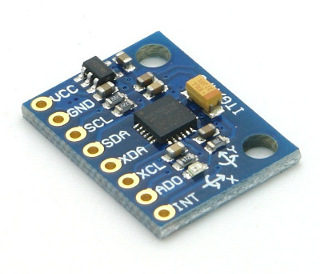
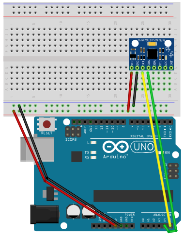
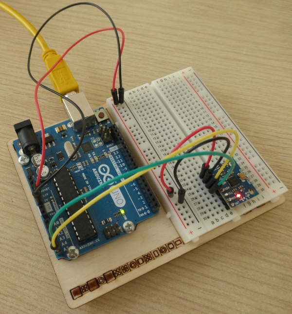
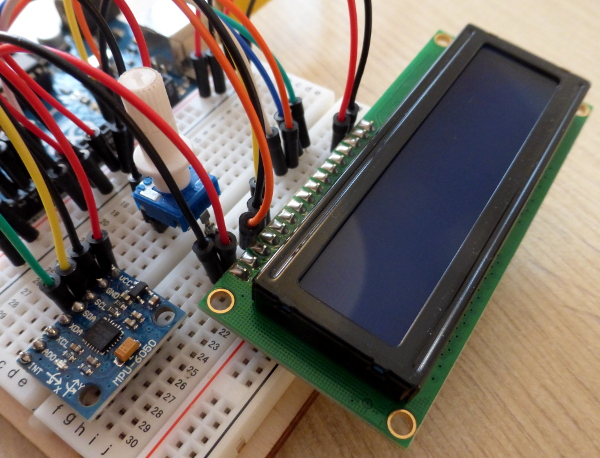
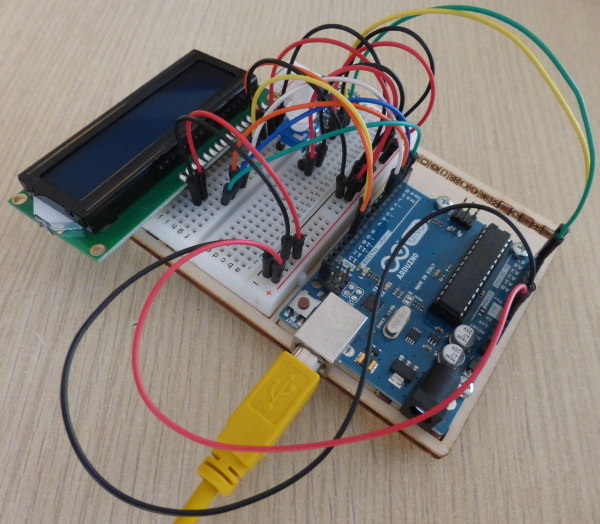

risorse | accelerometro con arduino
Attenzione: ho posto la massima cura ed attenzione nel redigere questi appunti; declino tuttavia ogni responsabilità per eventuali imprecisioni, errori od omissioni, così come declino ogni responsabilità per eventuali danni a cose, proprietà o persone derivanti dall’uso di questi contenuti.
La genesi di questo progetto è dovuta alle insistenze di mio figlio, una volta scoperta l'esistenza dell'accelerazione. Tutto è nato durante una visita alla base aeronautica delle Frecce Tricolori, ascoltando il tecnico spiegare a quali forze siano soggetti i piloti durante lo svolgimento delle manovre acrobatiche. Nei giorni successivi, durante i viaggi in auto, in corrispondenza ad ogni ripartenza o brusca frenata, la domanda era sempre la stessa: “… e questi, quanti «g» erano, papà?”[1]
Ho affrontato il progetto perché ho scoperto l'esistenza di un sensore a basso costo e facilmente interfacciabile con Arduino, l'MPU-6050. In realtà ho optato per una evaluation board basata su questo sensore, la SODIAL GY-521, che rende l'interconnessione tra i due sistemi ancora più semplice. È disponibile per pochi Euro in svariate rivendite on-line di componenti elettronici, Amazon compresa.
La scheda GY-521 con il sensore MPU-6050 al centro
La scheda GY-521 è più conveniente da usare rispetto al sensore nudo perché:
Il collegamento della scheda GY-521 ad Arduino avviene per mezzo di quattro cavetti:
| GY-521 | Arduino | Cavo |
|---|---|---|
| VCC | 5V | rosso |
| GND | GND | nero |
| SCL | A5 | giallo |
| SDA | A4 | verde |
Le linee SCL e SDA del bus I2C sono collegate ai pin A4 e A5 per sfruttare la libreria di comunicazione Wire di Arduino che implementa la comunicazione del protocollo utilizzando proprio quei due pin.
Schema di connessione della scheda GY-521 ad Arduino
Realizzazione pratica del circuito
Per verificare che il circuito sia stato cablato correttamente ed il sensore funzioni come da specifiche si può innanzitutto controllare che questi risponda all'indirizzo 0x68 del bus I2C, avendo lasciato il pin AD0 scollegato (cfr. registro 117 “Who am I” in [7]):
The contents of WHO_AM_I are the upper 6 bits of the MPU-60X0’s 7-bit I C address. The least significant bit of the MPU-60X0’s I2C address is determined by the value of the AD0 pin. The value of the AD0 pin is not reflected in this register. The default value of the register is 0x68. Bits 0 and 7 are reserved (Hard coded to 0).
Un semplice scanner che verifica la presenza di dispositivi collegati al bus I2C di Arduino è disponibile all'indirizzo http://playground.arduino.cc/Main/I2cScanner, e quel che segue ne è un adattamento:
#include <Wire.h>
void setup() {
Wire.begin();
Serial.begin(9600);
}
void loop() {
int found_devices = 0;
static char buffer[128];
Serial.println("Scanning IC2 bus...");
for (byte addr = 0; addr < 127; ++addr) {
if ((addr == 0) // General call address
|| (addr == 1) // CBUS address
|| (addr == 2) // Reserved for Different Bus Formats
|| (addr == 3) // Reserved for future purposes
|| (addr & 0x7c == 0x04) // Hs-mode master code
|| (addr & 0x7c == 0x38) // 10-bit slave addressing
|| (addr & 0x7c == 0x3c)) // Reserved for future purposes
continue;
Wire.beginTransmission(addr);
byte response = Wire.endTransmission();
if (response == 0) {
sprintf(buffer, "IC2 device found at address 0x%02X", addr);
Serial.println(buffer);
++found_devices;
}
else if (response != 2) { // 2 = NACK on transmit of address
sprintf(buffer, "Error %d while peeking address 0x%02X", response, addr);
Serial.println(buffer);
}
}
if (found_devices == 0)
Serial.println("No device found.");
Serial.println("Scanning completed, waiting for another run...");
delay(5000);
}
Se tutto è a posto, nella finestra del monitor seriale si dovrebbe leggere qualcosa di simile a:
Scanning IC2 bus... IC2 device found at address 0x68 Scanning completed, waiting for another run...
Collegando il pin AD0 a 5V l'indirizzo del sensore dovrebbe passare a 0x69:
Scanning IC2 bus... IC2 device found at address 0x69 Scanning completed, waiting for another run...
Il sensore MPU-6050 supporta due modalità di funzionamento: la prima, più semplice, consente di acquisire i dati provenienti dal giroscopio, dagli accelerometri e dal sensore interno di temperatura in modo sincrono, ovvero su esplicita richiesta inviata sul bus I2C. La seconda modalità, detta Digital Motion Processor™ (DMP), è in grado invece di effettuare il tracking del sensore nello spazio tridimensionale e di riconoscere diverse gesture, come ad esempio lo scuotimento. La comunicazione in questo caso avviene in modo asincrono, per mezzo di interrupt, grazie al buffer interno di cui è dotata la scheda. Fare riferimento alla documentazione ufficiale per maggiori informazioni a riguardo[6].
La collezione di librerie per AVR/Arduino I2C Device Library ne contiene una per l'accelerometro scelto per questo progetto che porta il suo stesso nome, MPU6050. Avendo optato per l'interrogazione sincrona del sensore, ho preferito implementare direttamente il protocollo di comunicazione per impratichirmi nell'uso delle primitive di basso livello messe a disposizione dalla libreria Wire.
Scorrendo le specifiche tecniche dell'MPU-6050[7], si scopre che prima di avviare il ciclo di interrogazioni è necessario “risvegliare” il circuito disabilitando lo sleep-mode in cui il sensore si trova al momento dell'accesione; per far ciò è necessario azzerare il bit 6 del registro Power Management 1 di indirizzo 0x6B. Inclusa la libreria Wire per la gestione del bus I2C, si definiscono alcune costanti di comodo e si procede ad azzerare l'intero registro nella fase di inizializzazione dello sketch:
#include <Wire.h>
const int8_t MPU_I2C_ADDR = 0x68; // address of the MPU-6050 device
const int8_t PWR_MGMT_1 = 0x6B; // Power Management 1 register address
void setup() {
// initialize the Wire library
Wire.begin();
// wake up the mpu-6050 unit
Wire.beginTransmission(MPU_I2C_ADDR);
Wire.write(PWR_MGMT_1);
Wire.write(0);
Wire.endTransmission();
}
L'azzeramento del bit 6 avviene in maniera drastica, azzerando l'intero registro. Consultando la documentazione, si scopre che in realtà è conveniente agire in questo modo perché:
L'accelerometro dell'unità MPU può lavorare su quattro fondo scala diversi: ±2g, ±4g, ±8g e ±16g. Poiché la documentazione ufficiale non specifica quale fondo scala sia attivo al momento dell'accensione del sensore (anche se tutti gli esperimenti fatti hanno dimostrato che il sensore, una volta spento e riacceso, si predispone sul fondo scala ±2g), conviene impostarne uno esplicitamente. Il fondo scala è determinato dai bit 3 e 4 del registro Accelerometer Configuration di indirizzo 0x1C:
| b4 | b3 | fondo scala |
|---|---|---|
| 0 | 0 | ±2g |
| 0 | 1 | ±4g |
| 1 | 0 | ±8g |
| 1 | 1 | ±16g |
Anche in questo caso conviene definire delle costanti di comodo che risultano più esplicite rispetto a dei numeri “magici” sparpagliati nel codice di cui si rischia di dimenticare il significato in breve tempo:
#include <Wire.h>
const int8_t ACCEL_CONFIG = 0x1C; // Accelerometer Configuration
const int8_t PWR_MGMT_1 = 0x6B; // Power Management 1 register address
// accelerometer full scale modes
const int8_t AFS_SEL_2G = 0x00;
const int8_t AFS_SEL_4G = 0x08;
const int8_t AFS_SEL_8G = 0x10;
const int8_t AFS_SEL_16G = 0x18;
void setup() {
// initialize the Wire library
Wire.begin();
// wake up the mpu-6050 unit
Wire.beginTransmission(MPU_I2C_ADDR);
Wire.write(PWR_MGMT_1);
Wire.write(0);
Wire.endTransmission();
// set the accelerometer full scale
Wire.beginTransmission(MPU_I2C_ADDR);
Wire.write(ACCEL_CONFIG);
Wire.write(AFS_SEL_2G);
Wire.endTransmission();
// initialize the serial port
Serial.begin(9600);
}
L'apertura della porta seriale consentirà più avanti di inviare al computer i dati acquisiti dall'accelerometro, così da verificare il corretto funzionamento del programma.
I valori di accelerazione degli assi x, y e z determinati dal sensore sono interi a 16 bit memorizzati all'interno di tre coppie registri a 8 bit:
| Indirizzo | Registro | Descrizione |
|---|---|---|
| 0x3B | ACCEL_XOUT_H | byte più significativo accelerazione asse x |
| 0x3C | ACCEL_XOUT_L | byte meno significativo accelerazione asse x |
| 0x3D | ACCEL_YOUT_H | byte più significativo accelerazione asse y |
| 0x3E | ACCEL_YOUT_L | byte meno significativo accelerazione asse y |
| 0x3F | ACCEL_ZOUT_H | byte più significativo accelerazione asse z |
| 0x40 | ACCEL_ZOUT_L | byte meno significativo accelerazione asse z |
Essendo questi registri contigui, la lettura dei 6 byte di dati può avvenire in blocco a partire dal primo registro, il cui indirizzo per comodità e chiarezza viene definito in una costante:
... const int8_t ACCEL_CONFIG = 0x1C; // Accelerometer Configuration const int8_t ACCEL_XOUT_H = 0x3B; // Accelerometer Measurements const int8_t PWR_MGMT_1 = 0x6B; // Power Management 1 register address ...
Segue il codice per la lettura dei 6 byte di dati:
void loop() {
// point to the first accelerometer register
Wire.beginTransmission(MPU_I2C_ADDR);
Wire.write(ACCEL_XOUT_H);
Wire.endTransmission();
// read six bytes of data
Wire.requestFrom(MPU_I2C_ADDR, 6);
// wait some time before the next acquisition
delay(1000);
}
A questo punto è necessario ricostruire i tre valori di accelerazione a 16 bit a partire dai 6 byte appena letti; tenendo presente che per ogni coppia di registri quello di indirizzo inferiore contiene il byte più significativo, il problema si risolve con due semplici operazioni logiche:
void loop() {
...
// read six bytes of data
Wire.requestFrom(MPU_I2C_ADDR, 6);
// the most significant byte is transmitted first!
int16_t accel_x = Wire.read() << 8 | Wire.read();
int16_t accel_y = Wire.read() << 8 | Wire.read();
int16_t accel_z = Wire.read() << 8 | Wire.read();
// print the acceleration values
Serial.println(String(accel_x));
Serial.println(String(accel_y));
Serial.println(String(accel_z));
Serial.println(" ");
// wait some time before the next acquisition
delay(1000);
}
Segue un esempio di cattura del monitor seriale:
-680 112 16432 -656 76 16472 -672 100 16512 -620 68 16496 -740 92 16560 ...
I dati grezzi ottenuti dal sensore non sono molto parlanti, perché si riferiscono ad un fondo scala che colui che legge i dati potrebbe non conoscere. Diventano più comprensibili se espressi in funzione dell'accelerazione gravitazionale. Per far ciò è sufficiente riscalare il valore numerico acquisito rispetto al fondo scala in uso in quell'istante:
| fondo scala | sensibilità |
|---|---|
| ±2g | 16384 LSB/g |
| ±4g | 8192 LSB/g |
| ±8g | 4096 LSB/g |
| ±16g | 2048 LSB/g |
La sensibilità del sensore rappresenta il valore di accelerazione associato al singolo bit, e si ottiene dividendo il numero di configurazioni disponibili (216=65536) per l'ampiezza dell'intervallo di misura (4g per il range ±2g, 8g per il ±4g e così via).
Tornando al codice, si dichiara dapprima la variabile che conterrà il fattore di conversione da dato grezzo a frazione di accelerazione di gravità:
... // accelerometer full scale modes const int8_t AFS_SEL_2G = 0x00; const int8_t AFS_SEL_4G = 0x08; const int8_t AFS_SEL_8G = 0x10; const int8_t AFS_SEL_16G = 0x18; float to_g_force; ...
Si prosegue inizializzando la variabile in funzione del fondo scala scelto:
void setup() {
// initialize the Wire library
Wire.begin();
// wake up the mpu-6050 unit
Wire.beginTransmission(MPU_I2C_ADDR);
Wire.write(PWR_MGMT_1);
Wire.write(0);
Wire.endTransmission();
// select the accelerometer full scale
int8_t afs_sel = AFS_SEL_2G;
// set the accelerometer full scale
Wire.beginTransmission(MPU_I2C_ADDR);
Wire.write(ACCEL_CONFIG);
Wire.write(AFS_SEL_2G afs_sel);
Wire.endTransmission();
// set the acceleration conversion factor
to_g_force = 1. / (16384 >> (afs_sel >> 3 & 0x03));
// initialize the serial port
Serial.begin(9600);
}
Infine, si determinano i valori di accelerazione g lungo i tre assi:
void loop() {
...
// the most significant byte is transmitted first!
int16_t accel_x = Wire.read() << 8 | Wire.read();
int16_t accel_y = Wire.read() << 8 | Wire.read();
int16_t accel_z = Wire.read() << 8 | Wire.read();
// convert accelerometer readings to g-force values
float accel_x_g = accel_x * to_g_force;
float accel_y_g = accel_y * to_g_force;
float accel_z_g = accel_z * to_g_force;
// print the acceleration values
Serial.println(String(accel_x) + ": " + accel_x_g);
Serial.println(String(accel_y) + ": " + accel_x_g);
Serial.println(String(accel_z) + ": " + accel_x_g);
Serial.println(" ");
// wait some time before the next acquisition
delay(1000);
}
Nel monitor seriale ora appaiono anche i valori di accelerazione:
-216: -0.01 132: 0.01 20364: 1.24 -408: -0.02 108: 0.01 20168: 1.23 -160: -0.01 108: 0.01 20248: 1.24 -228: -0.01 160: 0.01 20136: 1.23 -352: -0.02 132: 0.01 20324: 1.24
Si nota che il sensore, disposto orizzontalmente sul tavolo in stato di riposo, fornisce un valore di accelerazione sugli assi x e y praticamente nullo, mentre sull'asse verticale un valore leggermente superiore a quello atteso di 1g, l'accelerazione gravitazionale naturale.
Lo sketch con l'interrogazione diretta del sensore è scaricabile qui.
Per rendere l'accelerometro utilizzabile senza la presenza di un computer è necessario arricchire il circuito di un display sul quale visualizzare i valori di accelerazione; in questo caso si è optato per un LCM-1602C, un display LCD piuttosto comune (è distribuito con lo starter kit Arduino), che implementa l'interfaccia standard Hitachi HD44780.
Il display LCD trovato nello starter kit Arduino
Il display contiene due righe di sedici caratteri ciascuna:
␣␣␣␣␣␣␣␣␣␣␣␣␣␣␣␣ ␣␣␣␣␣␣␣␣␣␣␣␣␣␣␣␣
I valori delle tre accelerazioni saranno visualizzati secondo il formato:
X:±N.NN␣␣Y:±N.NN Z:±N.NN␣␣␣␣␣␣␣␣␣
Resta spazio a sufficienza per visualizzare il valore complessivo dell'accelerazione:
X:±N.NN␣␣Y:±N.NN Z:±N.NN␣␣A:±N.NN
Dovendo visualizzare solo caratteri e cifre, il display può essere collegato ad Arduino avviene secondo la modalità semplificata a 4 bit, che richiede 7 linee di controllo anziché 11 (alimentazioni escluse):
| Display | Arduino | Cavo | Note | |
|---|---|---|---|---|
| 1 | VSS | GND | nero | |
| 2 | VDD | 5V | rosso | |
| 3 | V0 | - | cursore potenziometro | |
| 4 | RS | 12 | arancio | |
| 5 | R/W | GND | nero | 1=R, 0=W |
| 6 | E | 11 | giallo | |
| 7 | DB0 | - | non collegato | |
| 8 | DB1 | - | non collegato | |
| 9 | DB2 | - | non collegato | |
| 10 | DB3 | - | non collegato | |
| 11 | DB4 | 5 | bianco | |
| 12 | DB5 | 4 | arancio | |
| 13 | DB6 | 3 | blu | |
| 14 | DB7 | 2 | verde | |
| 15 | A | 5V | rosso | retroilluminazione + |
| 16 | K | GND | nero | retroilluminazione - |
Schema di connessione del display LCD con il potenziometro di regolazione del contrasto
Realizzazione pratica del circuito
Per pilotare il display si ricorre alla libreria LiquidCrystal:
#include <LiquidCrystal.h> #include <Wire.h> ... float to_g_force; // declare the LCD wiring schema used LiquidCrystal lcd(12, 11, 5, 4, 3, 2); // define the masks for the two rows static char* upper_row = "X: Y: "; static char* lower_row = "Z: A: ";
La libreria standard di Arduino non possiede una funzione di conversione dei valori a virgola mobile in stringa, per cui si rende necessario predisporre una routine apposita che faccia apparire i valori di accelerazione nel formato prefissato:
void sprintf_accel(char* buffer, int pos, float value) {
// convert the floating point value in cents
int cents = static_cast<int>(value * 100);
// print the sign
if (cents >= 0)
buffer[pos++] = '+';
else
buffer[pos++] = '-';
// print the value, or 9.99 if it is too big
cents = min(999, labs(cents));
buffer[pos++] = '0' + cents / 100 % 10; // units
buffer[pos++] = '.'; // decimal separator
buffer[pos++] = '0' + cents / 10 % 10; // tenths
buffer[pos++] = '0' + cents % 10; // cents
}
A questo punto non resta che inizializzare la libreria e utilizzare la nuova funzione per scrivere i valori di accelerazione nei posti giusti:
void setup() {
...
to_g_force = 1. / 16384;
// initialize the LCD display
lcd.begin(16, 2);
// print the first row template
lcd.setCursor(0, 0);
lcd.print(upper_row);
// print the second row template
lcd.setCursor(0, 1);
lcd.print(lower_row);
// initialize serial port
Serial.begin(9600);
}
void loop() {
...
// convert accelerometer readings to g-force values
float accel_x_g = accel_x * to_g_force;
float accel_y_g = accel_y * to_g_force;
float accel_z_g = accel_z * to_g_force;
// calculate the total acceleration
float accel_a_g = sqrt(
accel_x_g * accel_x_g
+ accel_y_g * accel_y_g
+ accel_z_g * accel_z_g);
// print the acceleration values into the row templates
sprintf_accel(upper_row, 2, accel_x_g);
sprintf_accel(upper_row, 11, accel_y_g);
sprintf_accel(lower_row, 2, accel_z_g);
sprintf_accel(lower_row, 11, accel_a_g);
// update the display
lcd.setCursor(0, 0);
lcd.print(upper_row);
lcd.setCursor(0, 1);
lcd.print(lower_row);
// print the acceleration values
Serial.println(String(accel_x) + ": " + accel_x_g);
Serial.println(String(accel_y) + ": " + accel_x_g);
Serial.println(String(accel_z) + ": " + accel_x_g);
Serial.println(" ");
// wait some time before the next acquisition
delay(1000);
}
Lo sketch con il supporto del display è scaricabile qui.
La frequenza di acquisizione di 1Hz non è sufficiente per apprezzare variazioni repentine di accelerazione: sottoponendo il circuito ad un urto è raro vederne sul display l'effetto. Un modo per “catturare” in modo più efficace i cambiamenti di accelerazione consiste nell'aumentare la frequenza di campionamento. D'altra parte, non è pensabile visualizzare i dati acquisiti allo stesso ritmo con cui vengono raccolti: il tempo di risposta non nullo del display e l'effetto persistenza della retina[6] non permetterebbero di leggere con chiarezza i valori numerici.
In questi casi conviene conservare un numero prestabilito di campioni e visualizzare sul display quello più significativo, avendo cura di aggiornare il display con frequenza minore di quella di campionamento in modo da evitare fastidiosi sfarfallii.
Il ciclo principale del programma dovrà quindi:
A tal scopo si definiscono alcune variabili di supporto:
...
// declare the LCD wiring schema used
LiquidCrystal lcd(12, 11, 5, 4, 3, 2);
const int display_refresh_rate_ms = 500; // update the display every 500ms
unsigned long last_display_refresh_time = 0; // last time the display was updated
static char* upper_row = "X: Y: ";
static char* lower_row = "Z: A: ";
// data acquisition rate
const unsigned long scan_rate_ms = 10; // sample at 100Hz
// data buffers
const int buffer_length = 100;
float accel_x_buffer[buffer_length];
float accel_y_buffer[buffer_length];
float accel_z_buffer[buffer_length];
float accel_a_buffer[buffer_length];
int next_scan_index = 0; // where the next sample will be saved
...
void loop() {
unsigned long loop_start = millis();
// point to the first accelerometer register
Wire.beginTransmission(MPU_I2C_ADDR);
Wire.write(ACCEL_XOUT_H);
Wire.endTransmission();
// read six bytes of data
Wire.requestFrom(MPU_I2C_ADDR, 6);
// the most significant byte is transmitted first!
int16_t accel_x = Wire.read() << 8 | Wire.read();
int16_t accel_y = Wire.read() << 8 | Wire.read();
int16_t accel_z = Wire.read() << 8 | Wire.read();
// convert the accelerometer readings to g-force values
float accel_x_g = accel_x * to_g_force;
float accel_y_g = accel_y * to_g_force;
float accel_z_g = accel_z * to_g_force;
// calculate the total acceleration
float accel_a_g = sqrt(
accel_x_g * accel_x_g
+ accel_y_g * accel_y_g
+ accel_z_g * accel_z_g);
// save the acceleration data
accel_x_buffer[next_scan_index] = accel_x_g;
accel_y_buffer[next_scan_index] = accel_y_g;
accel_z_buffer[next_scan_index] = accel_z_g;
accel_a_buffer[next_scan_index] = accel_a_g;
// find the position for the next scan
next_scan_index = (next_scan_index + 1) % buffer_length;
// time to update the display?
if (millis() - last_display_refresh_time > display_refresh_rate_ms) {
// time to update the display
last_display_refresh_time = millis();
// find the maximum acceleration index
int max_scan_index = 0;
for (int i = 1; i < buffer_length; i++)
if (accel_a_buffer[i] > accel_a_buffer[max_scan_index])
max_scan_index = i;
sprintf_accel(upper_row, 2, accel_x_g accel_x_buffer[max_scan_index]);
sprintf_accel(upper_row, 11, accel_y_g accel_y_buffer[max_scan_index]);
sprintf_accel(lower_row, 2, accel_z_g accel_z_buffer[max_scan_index]);
sprintf_accel(lower_row, 11, accel_a_g accel_a_buffer[max_scan_index]);
lcd.setCursor(0, 0);
lcd.print(upper_row);
lcd.setCursor(0, 1);
lcd.print(lower_row);
}
// print the acceleration values
Serial.println(String(accel_x) + ": " + accel_x_g);
Serial.println(String(accel_y) + ": " + accel_y_g);
Serial.println(String(accel_z) + ": " + accel_z_g);
Serial.println(" ");
// wait for the acquisition period to expire
unsigned long elapsed = millis() - loop_start;
if (elapsed < scan_rate_ms)
delay(scan_rate_ms - elapsed);
}
// wait some time before the next acquisition
delay(1000);
Compilando il programma si riscontra un errore di memoria:
Global variables use 2,096 bytes (102%) of dynamic memory, leaving -48 bytes for local variables. Maximum is 2,048 bytes. processing.app.debug.RunnerException: Not enough memory; see http://www.arduino.cc/en/Guide/Troubleshooting#size for tips on reducing your footprint. at processing.app.debug.Compiler.size(Compiler.java:344) at processing.app.debug.Compiler.build(Compiler.java:123) at processing.app.Sketch.build(Sketch.java:1109) at processing.app.Sketch.exportApplet(Sketch.java:1127) at processing.app.Sketch.exportApplet(Sketch.java:1113) at processing.app.Editor$DefaultExportHandler.run(Editor.java:2380) at processing.app.Base.<init>(Base.java:454) at processing.app.Base.guardedMain(Base.java:226) at processing.app.Base.main(Base.java:137) Not enough memory; see http://www.arduino.cc/en/Guide/Troubleshooting#size for tips on reducing your footprint.
Troppe variabili globali. Un modo per risolvere il problema è quello di ridurre la dimensione del buffer, portandola da 100 a 90 campioni, oppure rinunciare alla trasmissione seriale. Meglio la seconda, considerando che ora i valori di accelerazione possono essere letti direttamente sul display:
void setup() {
...
// initialize the serial port
Serial.begin(9600);
}
void loop() {
...
// print the acceleration values
Serial.println(String(accel_x) + ": " + accel_x_g);
Serial.println(String(accel_y) + ": " + accel_y_g);
Serial.println(String(accel_z) + ": " + accel_z_g);
Serial.println(" ");
// wait for the acquisition period to expire
unsigned long elapsed = millis() - loop_start;
...
}
La compilazione ora ha successo, sebbene venga emesso il seguente avviso:
Global variables use 1,893 bytes (92%) of dynamic memory, leaving 155 bytes for local variables. Maximum is 2,048 bytes. Low memory available, stability problems may occur.
L'avviso può essere ignorato, fin tanto che le variabili locali non eccedono i 155 byte (allo stato attuale il codice ne usa poco più di trenta). Lo sketch che implementa l'acquisizione bufferizzata è scaricabile qui.
In stato di riposo, posto su una superficie perfettamente orizzontale, le letture fornite dal sensore in uso sono le seguenti:
X:-0.01␣␣Y:+0.00 Z:+1.24␣␣A:+1.24
Mentre i valori di accelerazione sugli assi x e y sono sufficientemente vicini al valore atteso zero, sull'asse verticale il sensore misura un'accelerazione ben maggiore di 1g. Con un po' di prove, si scopre che l'entità dell'errore non dipende dalla scelta del fondo scala. Il problema è noto[4][5], ma fortunatamente di facile soluzione[3]: si tratta di calibrare il sensore, posizionandolo su una superficie piana, lanciando lo sketch di calibrazione disponibile qui, quindi caricare gli offset da esso calcolati negli appositi registri del sensore. Poiché lo sketch di calibrazione fa uso della libreria MPU6050 della collezione I2C Device Library, è necessario salvare, nella stessa cartella che ospita lo sketch mpu-6050-calibration.ino, anche i file I2Cdev.h, I2Cdev.cpp, MPU605.h e MPU6050.cpp scaricabili dal sito ufficiale (un archivio locale contenente tutti i file necessari è disponibile qui).
Una volta compilato e caricato lo sketch, è necessario aprire il monitor seriale e impostarlo alla velocità di 115200 baud. Sul monitor apparirà il messaggio:
Send any character to start sketch.
Subito dopo aver premuto il pulsante la procedura di calibrazione ha inizio:
MPU6050 Calibration Sketch Your MPU6050 should be placed in horizontal position, with package letters facing up. Don't touch it until you see a finish message. MPU6050 connection successful Reading sensors for first time... Calculating offsets... ... ... ... ... ... FINISHED! Sensor readings with offsets: -5 5 16380 0 -1 0 Your offsets: -2574 336 1755 6 -41 35 Data is printed as: acelX acelY acelZ giroX giroY giroZ Check that your sensor readings are close to 0 0 16384 0 0 0 If calibration was succesful write down your offsets so you can set them in your projects using something similar to mpu.setXAccelOffset(youroffset)
In questo caso i valori di calibrazione suggeriti sono rispettivamente -2574 per l'accelerometro dell'asse x, 336 per quello dell'asse y, 1755 per quello sull'asse z.
Nota: i valori correttivi sono specifici di un determinato sensore. Non utilizzare i valori di calibrazione di un sensore per uno diverso. Ogni sensore va calibrato separatamente.
Come si calibra il sensore? La documentazione ufficiale non ne fa menzione, ma il sensore è dotato di una serie di registri che servono proprio a questo scopo[8].
Il codice viene quindi esteso per inviare i valori di calibrazione negli appositi registri in fase di inizializzazione della scheda:
...
const int8_t XG_OFFS_USRH = 0x06; // Accelerometer Offset Cancellation
const int8_t ACCEL_CONFIG = 0x1C; // Accelerometer Configuration
const int8_t ACCEL_XOUT_H = 0x3B; // Accelerometer Measurements
const int8_t PWR_MGMT_1 = 0x6B; // Power Management 1 register address
...
void setup() {
...
// set the acceleration conversion factor
to_g_force = 1. / (16384 >> (afs_sel >> 3 & 0x03));
// calibrate the accelerometer
const int16_t offset_x = -2574;
const int16_t offset_y = 336;
const int16_t offset_z = 1755;
Wire.beginTransmission(MPU_I2C_ADDR);
Wire.write(XG_OFFS_USRH);
uint8_t offsets[6];
offsets[0] = static_cast<uint8_t>(offset_x >> 8);
offsets[1] = static_cast<uint8_t>(offset_x & 0x00ff);
offsets[2] = static_cast<uint8_t>(offset_y >> 8);
offsets[3] = static_cast<uint8_t>(offset_y & 0x00ff);
offsets[4] = static_cast<uint8_t>(offset_z >> 8);
offsets[5] = static_cast<uint8_t>(offset_z & 0x00ff);
Wire.write(offsets, 6);
Wire.endTransmission();
// initialize the LCD display
lcd.begin(16, 2);
// print the first row template
lcd.setCursor(0, 0);
lcd.print(upper_row);
// print the second row template
lcd.setCursor(0, 1);
lcd.print(lower_row);
}
L'effetto della calibrazione è subito evidente:
X:-0.00␣␣Y:+0.00 Z:+1.00␣␣A:+1.00
La versione finale dello sketch con la calibrazione del sensore è scaricabile qui.
Pagina modificata il 27/12/2016